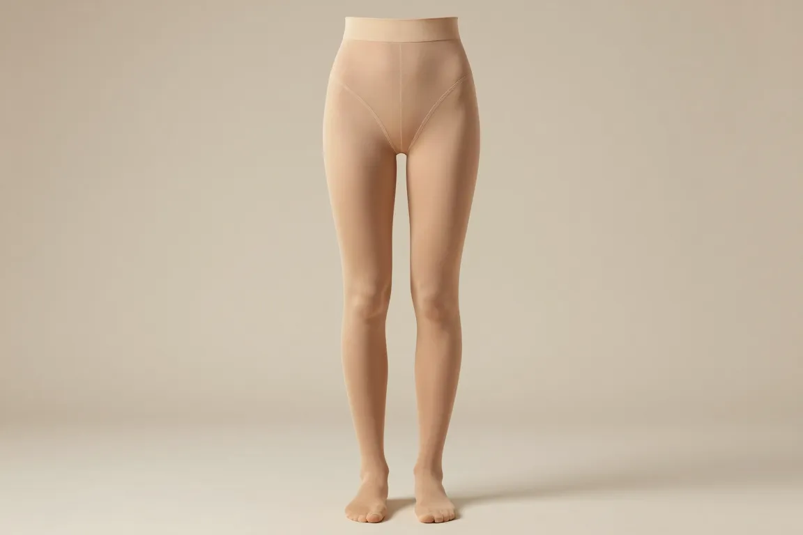

Glatt undertøy uten bein av strekknylon og elastan: strømpebukser med kontrolltopp, truser med høy midje og bodyer. De er laget sømløse eller med limte kanter, slik at de holder kroppen og ikke viser noen linje under kjolen.

Kjerneidé
Forming kan være myk: et strikkestoff med elastan holder kroppen uten bein og setter ingen linje under tøyet.
Designprinsipper
Strikk kroppen av nylon og elastan, med 15 til 40 prosent elastan for fast hold.
Strikk plagget rundt, eller lim kantene, slik at ingen søm synes.
Bruk soner: fast powernet over magen og låret, og et lettere strikkestoff ellers.
Hev midjen til naturlig midje, og forleng beinet til midt på låret.
Skjær kanten med laser eller et limt bånd, slik at den ligger flatt mot huden.
Tilpass stoffet til et bredt spekter av hudtoner, i minst 10 nyanser.